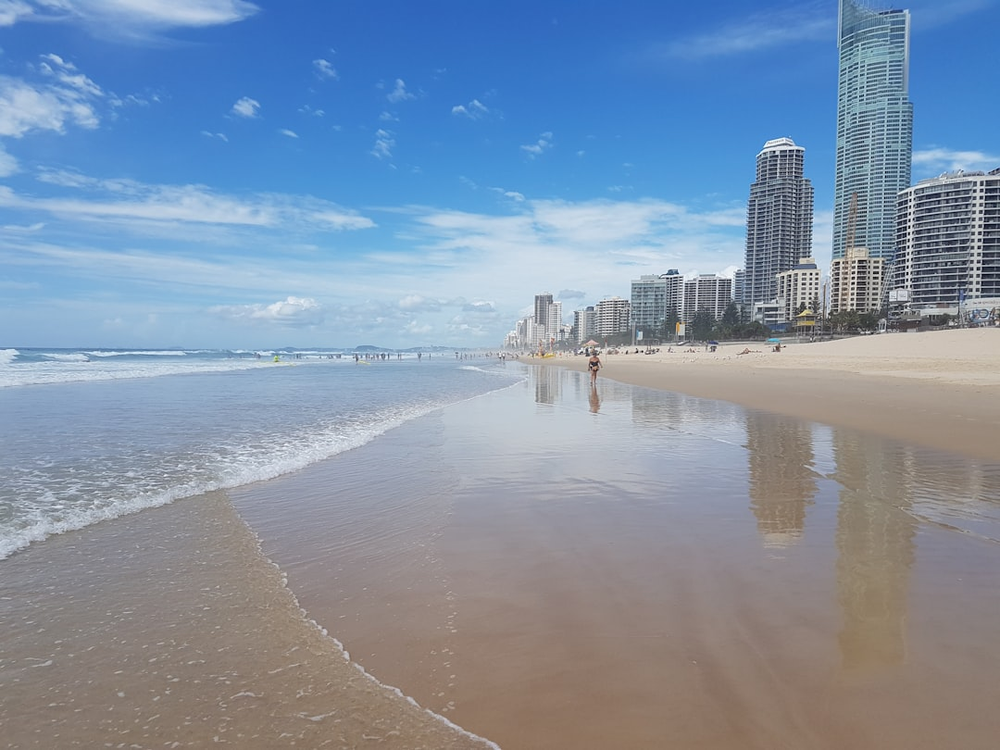

A Gold Coast pool brief should start with the property, not a catalogue shape. The supplied source page states no fixed price, timing, availability or acceptance of work, so the useful answer is a written scope that tests access, slope, drainage, nearby structures, fencing, equipment, finishes and surrounding works before commitment. For custom concrete work, ask for inclusions, exclusions, approval assumptions and the relevant QBCC licence details in writing.
For homeowners comparing pool builders gold coast options, the first practical filter is whether the pool idea, site constraints and outdoor works can be turned into a clear written scope.
Pool Builders Gold Coast Explained
Pool Builder Gold Coast frames custom concrete pool planning around the relationship between the shell, access, levels, drainage, fencing and surrounding works. That is a useful order for Gold Coast properties because the same pool concept can become a different job when the block is compact, sloping, coastal, canal-side, hinterland or acreage.
A sketch or inspiration image is still helpful, but it should not be the only brief. The first conversation needs the suburb or postcode, the intended use, access points, nearby structures and any outdoor work that must connect to the finished pool area. Photos can come later if a provider asks for them, but the written notes should already explain what is known and what needs inspection.
Use the early brief to separate preferences from constraints. Shape, edge detail and finish are design preferences. Excavation access, grade, drainage, retaining interfaces and fencing movement paths are constraints that can alter feasibility, scope and cost assumptions.
What A Written Scope Should Resolve
A written scope is the document that makes pool proposals comparable. The source page repeatedly points readers toward inclusions, allowances, exclusions and approval assumptions, which is stronger than comparing a headline promise or a loose description of a finished pool.
- Inclusions: the concrete shell direction, equipment, finishes and connected outdoor works that are actually part of the proposal.
- Allowances: items that may be priced provisionally because site conditions or selections are not final.
- Exclusions: related work that may sit outside the pool proposal, such as separate landscape, drainage or retaining items.
- Approval assumptions: the expected pathway for pool approvals, engineering and barrier compliance.
- Site assumptions: excavation access, soil or rock questions, grade, nearby structures and service access.
The brief should also record questions that need a written answer before the scope is fixed. Ask what information is still missing, what would trigger a variation and which decisions must be made before construction planning moves further.
Who This Applies To
This guide is most useful for homeowners planning a custom concrete pool where the pool, landscape and property need to work together from the start. It particularly suits projects with a compact outdoor area, a sloping block, acreage access, coastal or canal context, retaining interfaces or other constraints that make a standard pool conversation too thin.
It also applies when the pool is part of a broader outdoor area rather than a stand-alone item. If the finished space needs paths, levels, fencing gates, outdoor living zones or existing structures to connect cleanly, those details belong in the early planning notes.
For a more specific discussion of concrete shell planning, the related concrete pool builder guide for Gold Coast projects focuses on the construction angle. Read it alongside this broader planning checklist when the site looks buildable but the structural and access questions are still unresolved.
Approvals, Fencing And Licence Checks
The supplied page does not state a single approval pathway or barrier rule for every property. It does, however, identify pool approvals, pool fencing and a relevant QBCC licence check as matters to raise before engagement. Treat those as written-scope items rather than late-stage administration.
Barrier access can influence the practical layout of the pool area. Gates, circulation, adjoining structures and surrounding works may all affect how the finished space functions, so fencing should be discussed before the design is fixed. A pool that looks right in plan can still need adjustment if the barrier route conflicts with daily use.
Licence checking is a separate due diligence step. The source page prompts readers to verify the proposed contractor and relevant QBCC licence before engagement. Record the licence details, the trading entity that will contract with you and who is responsible for approvals or compliance documentation in the written proposal.
Cost Signals Without Guesswork
No price range is published in the supplied page, and it states that quotes, prices, rates and estimates are indicative only and subject to individual circumstances and revision. That means a responsible early budget conversation should focus on cost drivers, not invented averages.
The named cost signals are access, excavation, soil or rock, engineering, equipment, finishes and surrounding works. On a sloping site, the page also says additional investigation may be needed for levels, drainage, engineering or retaining. Those items can sit outside a simple visual comparison, so ask each provider to explain how they have been allowed for.
A practical request is to ask for the proposal to show what is fixed, what is provisional and what is excluded. ASIC Moneysmart's renovation guidance is a useful general reminder to plan renovation spending carefully and understand the contract before work proceeds.
- Map the site. Write down access, slope, nearby structures, drainage concerns and the outdoor works that must connect to the pool.
- Describe the use. Explain how the pool area should function day to day before narrowing the shape or finish.
- Request a written scope. Ask for inclusions, allowances, exclusions, approval assumptions and site assumptions in the proposal.
- Check licence details. Verify the proposed contractor and relevant QBCC licence before engagement.
- Review cost drivers. Ask how excavation, soil or rock, engineering, equipment, finishes and surrounding works have been treated.
| Question | Why it matters | What to ask for |
|---|---|---|
| Is the site straightforward or constrained? | Access, grade, drainage and nearby structures can change the scope. | A site assessment note before the final proposal. |
| Is fencing considered early? | Barrier access can affect layout and surrounding works. | Written assumptions about fencing and compliance responsibilities. |
| Are costs fixed or provisional? | Some items may depend on investigation or selections. | Clear inclusions, allowances and exclusions. |
| Is the contractor licence checked? | The source page prompts a relevant QBCC licence check before engagement. | Licence details tied to the proposed contracting entity. |
Common questions
Does the source page publish a fixed pool price? No. It says quotes, prices, rates and estimates are indicative only and subject to individual circumstances and revision.
Can a pool be planned for a sloping block? The source page says a sloping site can need additional investigation for levels, drainage, engineering or retaining, and feasibility depends on the actual property.
Should pool fencing be discussed before design is final? Yes. The source page says barrier access and surrounding works can affect the practical layout, so fencing is worth considering before the design is fixed.
What should I compare between pool proposals? Compare the written inclusions, allowances, exclusions, approval assumptions and site assumptions. The source page points to these items as the basis for a stronger scope.
This guide covers early planning questions for custom concrete pool projects on Gold Coast properties with site, access, fencing, approval and scope considerations.